I was going through the Coursera "Machine Learning" course, and in the section on multivariate linear regression something caught my eye. Andrew Ng presented the Normal Equation as an analytical solution to the linear regression problem with a least-squares cost function. He mentioned that in some cases (such as for small feature sets) using it is more effective than applying gradient descent; unfortunately, he left its derivation out.
Here I want to show how the normal equation is derived.
First, some terminology. The following symbols are compatible with the machine learning course, not with the exposition of the normal equation on Wikipedia and other sites - semantically it's all the same, just the symbols are different.
Given the hypothesis function:
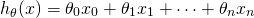We'd like to minimize the least-squares cost:
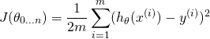Where 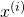 is the i-th sample (from a set of m samples) and 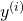 is the i-th expected result.
To proceed, we'll represent the problem in matrix notation; this is natural,
since we essentially have a system of linear equations here. The regression
coefficients  we're looking for are the vector:
we're looking for are the vector:
![\[\begin{pmatrix} \theta_0\\ \theta_1\\ ...\\ \theta_n \end{pmatrix}\in\mathbb{R}^{n+1}\]](../images/math/b16fd3d2b3041f13cb70199837a7c02c756078c7.png)
Each of the m input samples is similarly a column vector with n+1 rows,
 being 1 for convenience. So we can now rewrite the hypothesis
function as:
being 1 for convenience. So we can now rewrite the hypothesis
function as:
When this is summed over all samples, we can dip further into matrix notation. We'll define the "design matrix" X (uppercase X) as a matrix of m rows, in which each row is the i-th sample (the vector ). With this, we can rewrite the least-squares cost as following, replacing the explicit sum by matrix multiplication:
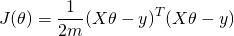Now, using some matrix transpose identities, we can simplify this a bit. I'll throw the 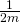 part away since we're going to compare a derivative to zero anyway:
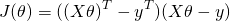 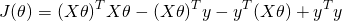Note that 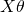 is a vector, and so is y. So when we multiply one by another, it doesn't matter what the order is (as long as the dimensions work out). So we can further simplify:
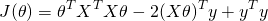Recall that here is our unknown. To find where the above
function has a minimum, we will derive by and compare to 0.
Deriving by a vector may feel uncomfortable, but there's nothing to worry about.
Recall that here we only use matrix notation to conveniently represent a system
of linear formulae. So we derive by each component of the vector, and then
combine the resulting derivatives into a vector again. The result is:
Or:
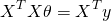Now, assuming that the matrix 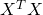 is invertible, we can multiply both
sides by  and get:
and get:
![\[\theta=(X^TX)^{-1}X^Ty\]](../images/math/20baabd9d33dcd26003bc44c7d81ba39e1ad4caa.png)
Which is the normal equation.
[Update 27-May-2015: I've written another post that explains in more detail how these derivatives are computed.]